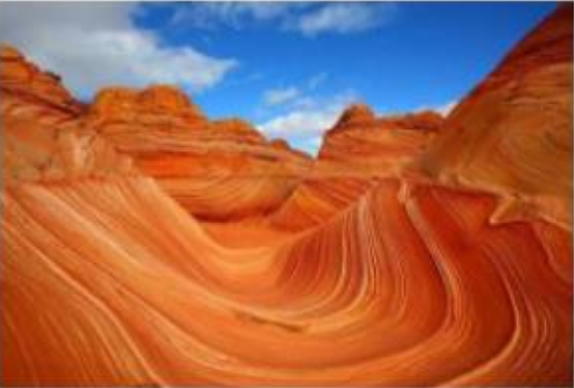

The Wave là một vùng đất sa thạch nằm ẩn mình trong sa mạc Arizona của nước Mỹ, đây là vùng ứa thạch độc lập nhất trên thế giới được hình thành từ đá sa hình. The Wave không chỉ là một điểm đến thu hút khác du lịch mà còn là chốn lý tưởng để các nhiếp ảnh gia tự do sáng tạo trong các khung hình của mình
Quay lại bài 1